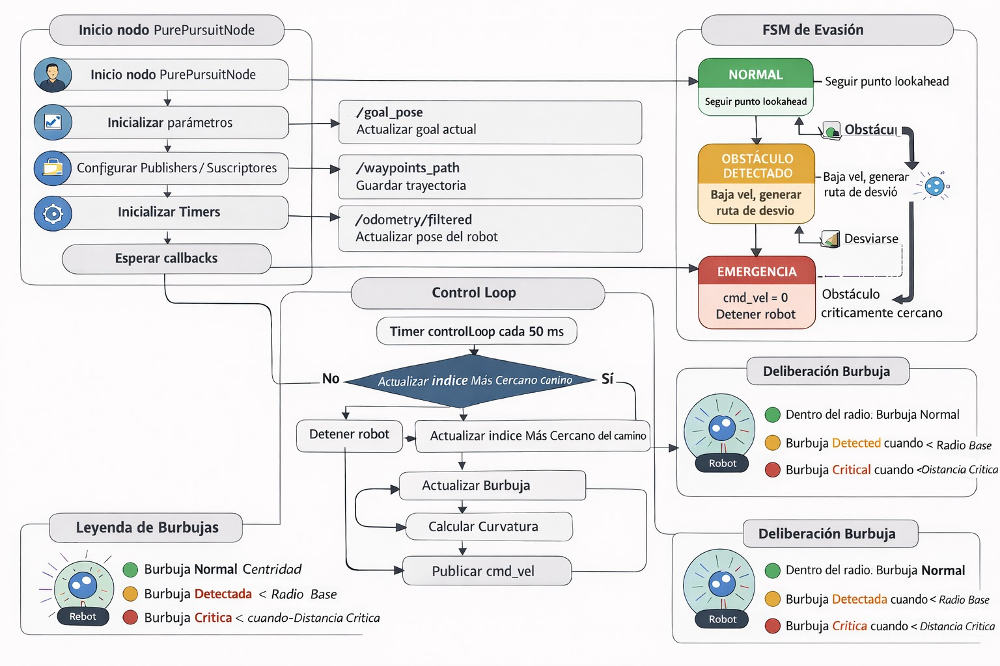
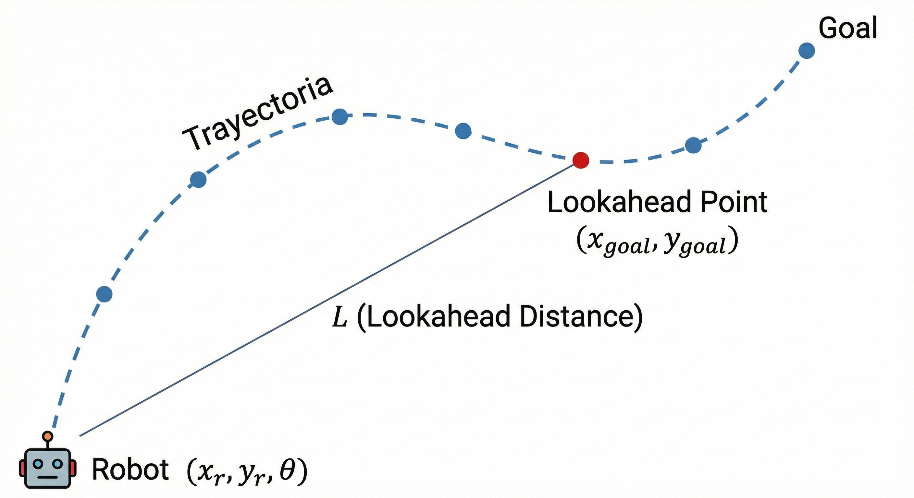

Implementación completa de navegación autónoma para robots móviles diferenciales en ROS 2
Planificación de trayectorias con interpolaciones, Control Pure Pursuit y Evasión de Obstáculos
CPR-ROSbot2-Pure-Pursuit


Esquema conceptual: Robot siguiendo la ruta con Pure Pursuit
Índice
- Introducción
- Arquitectura del Sistema
- Fundamentos Teóricos
- Algoritmo Pure Pursuit
- Interpolación con Splines Cúbicos
- Módulos del Sistema
- Route Publisher (Planificador de Trayectorias)
- Pure Pursuit Node (Controlador de Seguimiento)
- Parámetros Configurables
- Comunicación ROS 2
- Sistema de Evasión de Obstáculos
- Sistema de Logging
- Referencias
Introducción
Este proyecto implementa un sistema completo de navegación autónoma para robots móviles diferenciales utilizando ROS 2. El sistema combina:
- Planificación de trayectorias suaves mediante interpolación con Splines Cúbicos Naturales
- Control de seguimiento robusto con el algoritmo Pure Pursuit clásico
- Evasión reactiva de obstáculos con sistema de estados basado en sensores láser
- Visualización completa en RViz con marcadores y trayectorias
- Logging automático para análisis y benchmarking
Características Destacadas
- 8 rutas predefinidas: recta, zigzag, ocho, espiral, curvas suaves/cerradas, con obstáculos
- Lookahead Distance adaptativo que se ajusta según velocidad y error de seguimiento
- Velocidad variable basada en la curvatura de la trayectoria
- 3 estados de seguridad: Normal, Obstáculo Detectado, Emergencia
- Datos exportables en formato CSV con timestamp para análisis posterior
- Generación automática de desvíos mediante curvas de Bézier cuadráticas
Arquitectura del Sistema
El sistema está diseñado con una arquitectura modular de dos nodos principales que se comunican mediante topics de ROS 2:

Mapa conceptual sobre el funcionamineto de los códigos
Flujo de Funcionamiento
- Selección de Ruta:
RoutePublisher carga una ruta predefinida (parámetro selected_route)
- Generación de Spline: Los waypoints discretos se interpolan en una trayectoria continua y suave
- Publicación: La ruta completa se publica en
/waypoints_path y el primer objetivo en /goal_pose
- Control:
PurePursuitNode calcula velocidades para seguir la trayectoria
- Evasión: Si detecta obstáculos, genera desvíos automáticos con curvas de Bézier
- Avance: Al alcanzar un waypoint, se notifica mediante
/goal_reached y se publica el siguiente
Fundamentos Teóricos
Algoritmo Pure Pursuit
El Pure Pursuit es un algoritmo de seguimiento de trayectorias ampliamente utilizado en robótica móvil y vehículos autónomos.
Principio de Funcionamiento
El algoritmo busca un punto objetivo a una distancia fija L (lookahead distance) sobre la trayectoria y calcula la curvatura necesaria para alcanzarlo.

Mapa conceptual sobre el funcionamineto de los códigos
Ecuaciones Fundamentales
- Transformación a coordenadas del robot:
x' = (x_goal - x_r)·cos(θ) + (y_goal - y_r)·sin(θ)
y' = -(x_goal - x_r)·sin(θ) + (y_goal - y_r)·cos(θ)
- Cálculo de la curvatura: Donde
L = √(x'² + y'²) es la distancia euclidiana al punto lookahead.
- Velocidad angular (para robot diferencial): Donde
v es la velocidad lineal.
Interpolación con Splines Cúbicos
Para generar trayectorias suaves a partir de waypoints discretos, el sistema utiliza Splines Cúbicos Naturales.
Formulación Matemática
Para cada segmento entre waypoints i y i+1, el spline cúbico se define como:
S_i(t) = a_i + b_i·t + c_i·t² + d_i·t³ donde t ∈ [0,1]
Los coeficientes se calculan resolviendo un sistema tridiagonal que garantiza:
- Interpolación: S_i(0) = P_i y S_i(1) = P_{i+1}
- Continuidad C¹: S'i(1) = S'{i+1}(0)
- Continuidad C²: S''i(1) = S''{i+1}(0)
- Condiciones naturales: S''_0(0) = 0 y S''_n(1) = 0
Implementación en el Sistema
El nodo RoutePublisher implementa el algoritmo de Thomas para resolver eficientemente el sistema tridiagonal:
std::vector<double> computeNaturalCubicSpline(const std::vector<double>& points)
{
// Método de Thomas: eliminación hacia adelante + sustitución hacia atrás
}
El resultado es una trayectoria que:
- Pasa exactamente por todos los waypoints originales
- No presenta cambios bruscos de dirección
- Es derivable en toda su longitud
- Optimiza la suavidad de la curva
Módulos del Sistema
A. Route Publisher (Planificador de Trayectorias)
Gestión y publicación de rutas de navegación
Archivo: route_publisher.cpp
Clase principal: RoutePublisher
Funcionalidades Principales
1️ Definición de Rutas Predefinidas
- 8 rutas con diferentes características geométricas
- Waypoints en coordenadas cartesianas (x, y, z)
- Selección mediante parámetro
selected_route
2️ Generación de Splines Cúbicos
- Interpolación independiente para ejes X e Y
- Número configurable de puntos por segmento (
interpolation_points_per_segment)
- Preservación exacta de waypoints originales
3️ Gestión de Objetivos Secuenciales
- Publicación del waypoint actual en
/goal_pose
- Espera de confirmación en
/goal_reached
- Avance automático al siguiente objetivo
- Modo bucle opcional (
loop_route)
4️ Visualización en RViz
- Línea verde: Trayectoria interpolada (spline)
- Línea roja translúcida: Waypoints originales
- Esferas rojas: Posición de cada waypoint
- Esfera amarilla: Objetivo actual
Rutas Disponibles
| ID | Nombre | Descripción | Casos de Uso |
| 1 | Genérica | Trayectoria con curvas suaves | Pruebas generales |
| 2 | Recta | Línea recta de 5 metros | Validación de velocidad |
| 3 | Zigzag | Trayectoria en escalera | Pruebas de giros de 90° |
| 4 | Ocho | Patrón en forma de 8 | Curvas continuas |
| 5 | Espiral | Espiral creciente | Curvas variables |
| 6 | Curvas Amplias | Curvas suaves irregulares | Navegación compleja |
| 7 | Curvas Cerradas | Curvas pronunciadas | Maniobras difíciles |
| 8 | Con Obstáculo | Incluye zona de obstáculo | Pruebas de evasión |
Parámetros Clave
route_publisher_node:
ros__parameters:
selected_route: 1 # Ruta a cargar (1-8)
loop_route: false # Repetir ruta en bucle
interpolation_points_per_segment: 10 # Densidad de interpolación
Topics Publicados
/goal_pose (PoseStamped): Objetivo actual del segmento/waypoints_path (PoseArray): Trayectoria completa interpolada/waypoints_markers (MarkerArray): Visualización de la ruta
Topics Suscritos
/goal_reached (Bool): Confirmación de llegada al waypoint/change_route (Int32): Comando para cambiar de ruta dinámicamente
B. Pure Pursuit Node (Controlador de Seguimiento)
Control de velocidades y evasión de obstáculos
Archivo: pure_pursuit_node.cpp
Clase principal: PurePursuitNode
Funcionalidades Principales
1️ Algoritmo Pure Pursuit Clásico
- Búsqueda del punto más cercano a la trayectoria
- Cálculo del lookahead point a distancia L
- Transformación a coordenadas del robot
- Cálculo de curvatura y velocidades
2️ Lookahead Distance Adaptativo
LHD = v_factor × (δ_max - δ_min) × e^(-γ×|CTE|) + δ_min
- Se ajusta según velocidad actual
- Decrece exponencialmente con el error lateral
- Parámetro γ controla la agresividad del ajuste
3️ Velocidad Variable por Curvatura
v = v_max × (1 - k_curv × min(|κ|, 1.0))
- Reduce velocidad en curvas cerradas
- Mantiene velocidad máxima en rectas
- Factor
k_curv configurable
4️ Comienzo
- Al recibir una ruta, busca el punto más cercano al robot
- Inicia seguimiento desde ese punto
- Evita retrocesos innecesarios
5️ Sistema de Evasión de Obstáculos
- Máquina de estados con 3 niveles de seguridad
- Generación automática de desvíos con curvas de Bézier
- Burbuja de seguridad visualizable
Máquina de Estados
┌──────────┐
│ NORMAL │ ◄──── Sin obstáculos (> 0.5m)
└────┬─────┘
│
│ Obstáculo detectado (0.25m - 0.5m)
▼
┌──────────────────┐
│ OBSTACLE_DETECTED│ ◄──── Genera desvío con Bézier
└──────┬───────────┘
│
│ Obstáculo crítico (< 0.25m)
▼
┌──────────┐
│ EMERGENCY│ ◄──── Parada inmediata
└──────────┘
Estado NORMAL:
- Seguimiento estándar de trayectoria
- Velocidad a la máxima configurada
- Burbuja de seguridad en color azul
Estado OBSTACLE_DETECTED:
- Escaneo láser con FOV 190° (±95°)
- Cálculo de pesos por hemisferio:
peso = 1/distancia
- Decisión de dirección: desviar hacia lado con menor densidad
- Generación de curva de Bézier ( calculo del triángulo) con 3 puntos de control
- Velocidad reducida al 60%
- Burbuja de seguridad en color naranja
Estado EMERGENCY:
- Parada total del robot (
v = 0, ω = 0)
- Activación de alarmas visuales
- Burbuja de seguridad en color rojo
Generación de Desvíos (Curvas de Bézier)
Cuando se detecta un obstáculo, el sistema genera automáticamente una trayectoria alternativa:
Puntos de Control:
- P₀ (Inicio): Posición actual del robot
- P₁ (Ápex): Desplazado lateralmente + adelante
P₁ = P₀ + (forward_offset × front_dir) + (detour_offset × side_dir)
- P₂ (Reincorporación): Punto futuro sobre la ruta original
P₂ = punto_ruta_a_distancia(rejoin_distance)
Curva de Bézier Cuadrática:
B(t) = (1-t)²·P₀ + 2(1-t)t·P₁ + t²·P₂ donde t ∈ [0,1]
Se muestrean 15 puntos sobre la curva que reemplazan temporalmente el segmento problemático.
Parámetros Clave
pure_pursuit_node:
ros__parameters:
lookahead_min: 1.0
lookahead_max: 3.0
lookahead_gamma: 0.8
max_linear_vel: 0.5
max_angular_vel: 0.5
goal_tolerance: 0.2
bubble_base_radius: 0.5
critical_distance: 0.25
detour_offset: 1.0
rejoin_distance: 2.0
forward_offset: 0.5
Topics Publicados
/cmd_vel (Twist): Comandos de velocidad al robot/goal_reached (Bool): Señal de objetivo alcanzado/lookahead_marker (Marker): Punto lookahead (esfera magenta)/bubble_viz (Marker): Burbuja de seguridad (disco coloreado)/robot_marker (Marker): Posición del robot (esfera azul)/detour_path (MarkerArray): Trayectoria de desvío (línea cian)
Topics Suscritos
/goal_pose (PoseStamped): Objetivo de navegación/waypoints_path (PoseArray): Trayectoria a seguir/odometry/filtered (Odometry): Odometría filtrada del robot/scan (LaserScan): Datos del sensor láser
Parámetros Configurables
Tabla Completa de Parámetros
Route Publisher
| Parámetro | Tipo | Default | Rango | Descripción |
selected_route | int | 1 | 1-8 | Número de ruta a cargar |
loop_route | bool | false | - | Repetir ruta en bucle infinito |
interpolation_points_per_segment | int | 10 | 5-50 | Puntos interpolados entre waypoints |
Pure Pursuit Node
Navegación:
| Parámetro | Tipo | Default | Rango Típico | Descripción |
lookahead_min | double | 1.0 | 0.5-2.0 | LHD mínimo (metros) |
lookahead_max | double | 3.0 | 2.0-5.0 | LHD máximo (metros) |
lookahead_gamma | double | 0.8 | 0.3-1.5 | Factor de decaimiento exponencial |
max_linear_vel | double | 0.5 | 0.1-2.0 | Velocidad lineal máxima (m/s) |
max_angular_vel | double | 0.5 | 0.2-2.0 | Velocidad angular máxima (rad/s) |
goal_tolerance | double | 0.2 | 0.05-0.5 | Tolerancia de llegada (metros) |
Evasión de Obstáculos:
| Parámetro | Tipo | Default | Rango Típico | Descripción |
bubble_base_radius | double | 0.5 | 0.3-1.0 | Radio de burbuja de seguridad (m) |
critical_distance | double | 0.25 | 0.1-0.5 | Distancia de emergencia (m) |
detour_offset | double | 1.0 | 0.5-2.0 | Desplazamiento lateral del desvío (m) |
rejoin_distance | double | 2.0 | 1.0-4.0 | Distancia de reincorporación (m) |
forward_offset | double | 0.5 | 0.2-1.5 | Desplazamiento frontal del ápex (m) |
Comunicación ROS 2
Diagrama de Topics
┌─────────────────┐
│ RoutePublisher │
└────────┬────────┘
│
├─► /waypoints_path (PoseArray)
├─► /goal_pose (PoseStamped)
├─► /waypoints_markers (MarkerArray)
│
◄── /goal_reached (Bool)
◄── /change_route (Int32)
┌────────────────┐
│ PurePursuitNode│
└────────┬───────┘
│
├─► /cmd_vel (Twist)
├─► /goal_reached (Bool)
├─► /lookahead_marker (Marker)
├─► /bubble_viz (Marker)
├─► /robot_marker (Marker)
├─► /detour_path (MarkerArray)
│
◄── /goal_pose (PoseStamped)
◄── /waypoints_path (PoseArray)
◄── /odometry/filtered (Odometry)
◄── /scan (LaserScan)
Referencia Completa de Topics
Topics Publicados por Route Publisher
| Topic | Tipo | Frecuencia | Descripción |
/waypoints_path | geometry_msgs/PoseArray | Al cambiar ruta | Trayectoria completa interpolada |
/goal_pose | geometry_msgs/PoseStamped | Por waypoint | Objetivo actual del segmento |
/waypoints_markers | visualization_msgs/MarkerArray | Al actualizar | Visualización de ruta en RViz |
Topics Suscritos por Route Publisher
| Topic | Tipo | Descripción |
/goal_reached | std_msgs/Bool | Confirmación de llegada al waypoint |
/change_route | std_msgs/Int32 | Comando para cambiar de ruta |
Topics Publicados por Pure Pursuit Node
| Topic | Tipo | Frecuencia | Descripción |
/cmd_vel | geometry_msgs/Twist | 20 Hz | Comandos de velocidad al robot |
/goal_reached | std_msgs/Bool | Al alcanzar | Señal de objetivo cumplido |
/lookahead_marker | visualization_msgs/Marker | 20 Hz | Punto lookahead (esfera magenta) |
/bubble_viz | visualization_msgs/Marker | 20 Hz | Burbuja de seguridad (color según estado) |
/robot_marker | visualization_msgs/Marker | 20 Hz | Posición del robot (esfera azul) |
/detour_path | visualization_msgs/MarkerArray | Al desviar | Trayectoria alternativa generada |
Topics Suscritos por Pure Pursuit Node
| Topic | Tipo | Descripción |
/goal_pose | geometry_msgs/PoseStamped | Objetivo final de navegación |
/waypoints_path | geometry_msgs/PoseArray | Trayectoria a seguir |
/odometry/filtered | nav_msgs/Odometry | Odometría filtrada del robot |
/scan | sensor_msgs/LaserScan | Datos del sensor láser |
Sistema de Evasión de Obstáculos
Funcionamiento del Sistema
El sistema de evasión utiliza una máquina de estados con tres niveles de seguridad basados en la distancia mínima detectada por el LIDAR.
Burbuja de Seguridad
Burbuja de Seguridad
(0.5m radio)
____
,-' `-.
/ \
| 🤖 | ← Robot
\ /
`-.____,-'
Zona Crítica (< 0.25m)
____
,-' `-.
/ \
| |
\ /
`-.____,-'
Algoritmo de Detección
Paso 1: Escaneo del LIDAR
// FOV de 60° para navegación normal (±30°)
// FOV de 190° para análisis de desvío (±95°)
Paso 2: Análisis de Proximidad
if (min_distance < critical_distance) // < 0.25m
→ Estado EMERGENCY
else if (min_distance < bubble_base_radius) // < 0.5m
→ Estado OBSTACLE_DETECTED
else
→ Estado NORMAL
Paso 3: Cálculo de Dirección de Desvío
// Suma ponderada de obstáculos por hemisferio
peso_izquierda = Σ (1.0 / distancia_i) para ángulos negativos
peso_derecha = Σ (1.0 / distancia_i) para ángulos positivos
if (peso_izquierda < peso_derecha)
→ Desviar a la IZQUIERDA
else
→ Desviar a la DERECHA
Paso 4: Generación de Curva de Bézier
Puntos de control calculados:
// P0: Posición actual del robot
P0 = {robot_x, robot_y}
// P1: Punto ápex (máximo desplazamiento lateral)
P1 = P0 + forward_offset * [cos(θ), sin(θ)] // Adelante
+ detour_offset * [cos(θ±90°), sin(θ±90°)] // Lateral
// P2: Punto de reincorporación a la ruta
P2 = punto_sobre_ruta_a_distancia(rejoin_distance)
Curva de Bézier:
for (t = 0; t <= 1; t += 0.067) // 15 puntos
{
x(t) = (1-t)²·P0.x + 2(1-t)t·P1.x + t²·P2.x
y(t) = (1-t)²·P0.y + 2(1-t)t·P1.y + t²·P2.y
}
Visualización de Estados
| Estado | Color Burbuja | Velocidad | Acción |
| 🟢 NORMAL | Azul | 100% | Seguimiento estándar |
| 🟠 OBSTACLE_DETECTED | Naranja | 60% | Genera desvío automático |
| 🔴 EMERGENCY | Rojo | 0% | ¡Parada inmediata! |
Sistema de Logging
El sistema genera automáticamente archivos CSV con timestamp, que nos facilita despues la comparación y adquisición de datos.
| Campo | Unidad | Descripción |
time | s | Timestamp desde inicio |
robot_x | m | Posición X del robot |
robot_y | m | Posición Y del robot |
robot_yaw | rad | Orientación del robot |
goal_x | m | Posición X del objetivo |
goal_y | m | Posición Y del objetivo |
lookahead | m | Distancia lookahead actual (LHD) |
dist_error | m | Error lateral (CTE - Cross-Track Error) |
path_index | - | Índice actual en la trayectoria |
dist_goal | m | Distancia al final de la ruta |
linear_v | m/s | Velocidad lineal comandada |
angular_w | rad/s | Velocidad angular comandada |
curvature | 1/m | Curvatura calculada (κ) |
Referencias
- Pure Pursuit Algorithm
Robótica: Manipuladores y Robots Móviles Aníbal Ollero Baturone. Enlace
- ROSbot 2R HUSARION
Dpartamento de Sistema y Automatización, Universidad de Sevilla.
- Cubic Spline Interpolation
de Boor, C. (1978). A Practical Guide to Splines.
Springer-Verlag New York.
- Bézier Curves in Robotics
Gasparetto, A., & Zanotto, V. (2007). A new method for smooth trajectory planning of robot manipulators.
Autores: Pedro Cabello Pulido | Gabriela Cano Azuaga | Lola Hernández Canizares | Almudena Jin | Lucía Pérez Guerrero
Grado: Ingeniería Electrónica, Robótica y Mecatrónica
Copyright (c) 2025